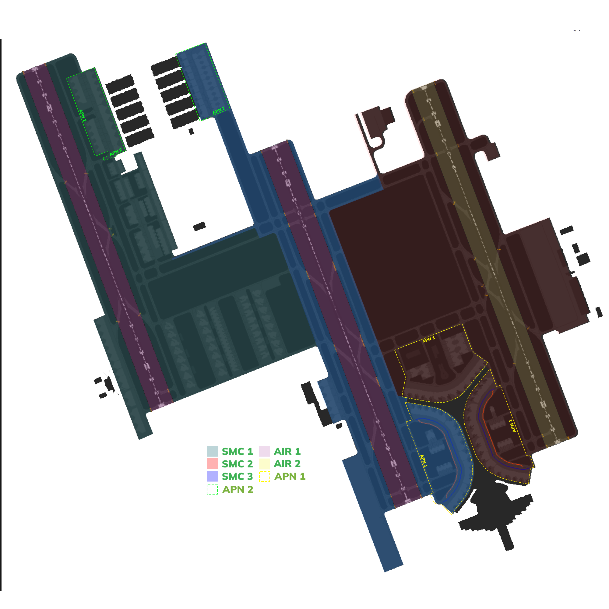
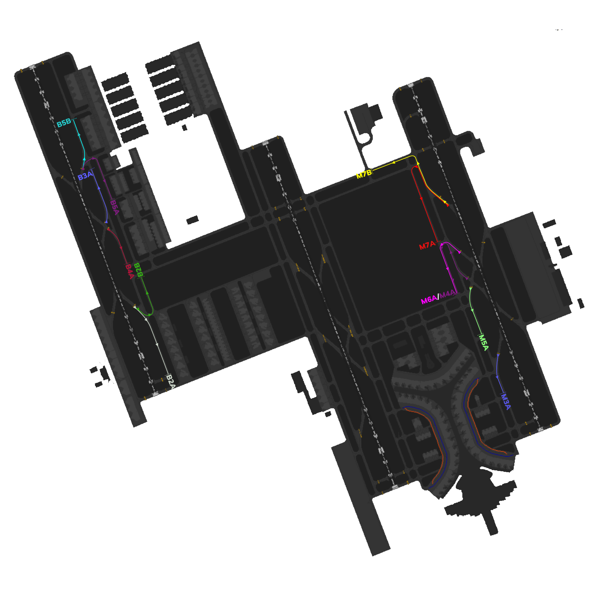

Jeddah Tower [OEJN_X_TWR]
This section details all the necessary Standard Operating Procedures for Tower Operations in King Abdulaziz International Airport (OEJN)
1. General Provisions
The Jeddah Air Control (AIR) is responsible for all aerodrome movements on runways and their associated taxiways. AIR shall also ensure separation between IFR aircraft that are arriving at and departing the aerodrome, as well as provide traffic information to VFR aircraft operating within the aerodrome control zone.
2. Designated Area of Responsibility
King Abdulaziz International Airport (OEJN) features two primary AIR positions, namely AIR 1, and AIR 2. The responsibilities and areas of control for each position are outlined as follows:

*Figure 2.1 - Aerodrome DAOR*
*Figure 2.2 - Control Zone DAOR*
2.1. Airspace
King Abdulaziz International Airport (OEJN) Control Zone (CTR) is Class D airspace and is centered around the aerodrome. Its ceiling is 2500ft AGL and has a radius of 10NM.
*Figure 2.3 - Jeddah Control Zone*
2.2. AIR 1 [Jeddah Tower West]
Jeddah Tower West [OEJN_1_TWR] covers the western and center runways:
- 34L/16R
- 34C/16C
2.2.1 Visual Reporting Points (VRPs)
Jeddah Tower West [OEJN_1_TWR] covers the following VRPs in the Jeddah Control Zone [CTR]:
- VRP07
- VRP08
- VRP09
- VRP10
- VRP11
2.3. AIR 2 [Jeddah Tower East]
Jeddah Tower East [OEJN_2_TWR] covers the eastern runway:
- 34R/16L
2.3.1 Visual Reporting Points (VRPs)
Jeddah Tower East [OEJN_2_TWR] covers the following VRPs in the Jeddah Control Zone [CTR]:
- VRP02
- VRP03
- VRP04
- VRP12
2.4. Standard Connection Hierarchy
Controllers must log in the following order to maintain realizm and follow SOPs:
- AIR 1 [OEJN_1_TWR]
- AIR 2 [OEJN_2_TWR]
This hierarchy of connection must always be followed unless ATS staff explictly permit you to do otherwise.
## 3. Runway Configurations ### 3.1 General The hierarchy of responsibility for determining the runway configuration is outlined as follows: - AIR 1 - APP - CTR - SMC 1 - GMP
::::tip Do note It is the ultimate responsibility of the tower controllers to set the active runways! In any airport!
So as long as there is a tower controller, it is his responsibility to set the active runway and ATIS, if not online, follow the hierarchy above :::: ### 3.2 Preferential Runway System [PRS] In Jeddah, the Preferential Runway System is in use. In conditions of slack winds, 34 operation is preferred up to a tailwind component of 6kts.
This is the more efficent configuration, thus it is used as much as possible.
::::tip Crosswind
In the event of a direct crosswind (250 degrees) with a speed exceeding 7 knots, the following guidelines should be followed to determine the runway configuration:
- Check the Terminal Aerodrome Forecast (TAF) for any indications of a potential change in weather conditions that may necessitate a different runway configuration.
- If the TAF suggests a possible shift in weather conditions that would favor an alternative configuration, select the runway configuration that aligns with the forecasted conditions.
- However, if the TAF does not indicate any expected changes that would warrant a different configuration, default to using the 34 Configs (presumably a reference to a specific set of runway configurations).
::::
3.3 Standard Runway Configuration
At King Abdulaziz International Airport, standard runway configurations for normal operations are established and ranked in order of preference.
The configurations, listed from most preferred to least preferred, are as follows:
- 34s [DDRO]
- 34s [SDRO]
- 16s [DDRO]
- 16s [SDRO]
::::info Do note.
Exceptions to runway configurations can be granted per pilot's request after approval from AIR and APP.
Standard Exceptions: - VFR Circuits - Royal Flights [Always departs/arrives on 34L/16R regardless of the active config] - Military Flights [Always departs/arrives on 34R/16L regardless of the active config] ::::
3.3.1. Dual Departure Runway Operations [DDRO]
In the context of runway operations at King Abdulaziz International Airport, the most preferred configuration is the Dual Departure Runway Operations (DDRO). This configuration involves utilizing both the center and eastern runways specifically for departures.
By using this configuration, the airport can maximize its departure capacity and efficiently manage the flow of departing aircraft. It allows for simultaneous departures from two runways, thereby reducing congestion and minimizing delays during peak traffic periods.
DDRO is considered the most preferred configuration due to its ability to enhance the airport's operational efficiency and optimize the utilization of available runway resources.
3.3.2. Single Departure Runway Operations [SDRO]
Single Departure Runway Operations (SDRO) is a runway configuration utilized at King Abdulaziz International Airport, though it is considered less preferred compared to other configurations. SDRO involves utilizing the center runway, exclusively for departures while the other runways are used for arrivals.
While this configuration allows for efficient management of departing aircraft, it can result in reduced departure capacity and potential delays, especially during periods of high traffic demand.
However, SDRO may be implemented due to operational constraints or specific circumstances that limit the availability of other runways.
4. Procedures
The below procedures are considered as standard and no coordination is required to employ them, except where explicitly required.
::::caution Should a situation arise that does not match any of the below cases, coordinate an arrangement with the affected agencies :::: ### 4.1 Departure procedures #### 4.1.1. Departure points
| Runway | Departure point |
|---|---|
| 34L | B1 / U |
| 34C | G1, G2 / H1, H2 |
| 34R | M1, M2 / N1 |
| 16L | M8, M9 / N9 |
| 16C | G6 / H7 |
| 16R | A7 / B7 |
*Table 4.2.1. - Departure points*
4.1.2. Line up clearances
Conditional line up instructions shall include the traffic that the aircraft is to follow, as well as the word “behind” at the beginning and end of the transmission.
AIR: “FAD123, Behind the departing Saudia A321, Via M1, line up runway 34R behind”
If aircraft have not yet reached the holding point where they are expected to line up at, ATC shall reiterate the cleared holding point. Example: “SVA123, Via M1, line up runway 34R”
4.1.3. Take-off clearances
Aircraft shall be cleared for take-off once adequate separation exists
Air: “SVA123, Winds 340 degrees 10knots, Runway 34R, cleared for take-off”
4.1.4. Parallel Departure
4.1.5. Parallel Departure
4.1.5. Separation requirements
Aircraft shall be separated on departure in compliance with standard IFR departure separation minima, standard wake turbulence separation or RE-CAT.
Succeeding aircraft on the same SID shall be separated by a minimum of 2 minutes.
VFR aircraft may be instructed to maintain visual separation with preceding aircraft and given a take-off clearance if no wake turbulence separation minima exists.
4.1.6. Low visibility and IMC
During low visibility operations and during IMC, departing aircraft shall not be cleared for take-off when there is an arriving aircraft within 4 NM of the landing runway threshold.
Traffic should report "airborne" after take-off. Once airborne they should then be handed off to the appropriate station.
4.1.7. IFR handoff procedure
IFR departures shall be handed off to the appropriate departure controller as instructed.
4.1.8. Stopping a departure
If the departing aircraft has to abort takeoff, the Tower controller shall use the following phraseology and instruct the aircraft twice. After the instruction, the Tower controller shall confirm that the aircraft has acknowledged the cancel takeoff instruction.
This is a common occurrence on VATSIM when an aircraft randomly connects to the network while on an active runway. Once conditions permit, if the aircraft needs to return to the end of the runway for takeoff, the Tower controller shall instruct the aircraft to hold short of the closest taxiway parallel to the active runway and hand off the aircraft to Ground.
(Takeoff roll commenced) AIR: "SVA123 stop immediately, I say again stop immediately. Aknowledge"
(Takeoff roll not commenced) AIR:"SVA123 hold position, cancel takeoff clearance. I say again cancel takeoff clearance, due ground crew on runway"
4.2 Arrival procedures
4.2.1. Preferred exit points
| Runway | Exit points |
|---|---|
| 34L | B5, B8 / A5 |
| 34R | M4, M6, M7 / N5 |
| 16L | M3, M5 / N4 |
| 16R | B2, B4 / A2 |
*Table 4.1.1 - Preferred exit points*
On initial contact with AIR, traffic must be advised to expect an exit point along with a landing clearance.
AIR: "SVA123, Plan to vacate M6, winds 340 degrees 10kts, runway 34R, cleared to land"
4.2.2. Arrival taxi routes
Arrival Taxi Routes (ATRs) are short pre-defined initial taxi paths for traffic that are designed to maintain a smooth flow of traffic after aircraft vacate the runway. These routes are established to prevent traffic congestion around the RETs and to optimize the tower's efficiency by avoiding the need to provide initial taxiway instructions. Instead, the tower instructs the aircraft to follow one of the predetermined ATRs based on the assigned parking stand by the Ground (GND) controller.
This allows for a smooth and immediate transfer of traffic to the appropriate ground controller.
::::caution Do Note
The Tower controller is responsible for assigning the Arrival Taxi Route (ATR) to aircraft. Example:
Pilot: SVA123, vacating via M6 AIR: SVA123, Follow the M6A Arrival Taxi Route, Contact Ground 121.600 ::::
4.2.2.1. 34 Arrival Taxi Routes
| Arrival Taxi Route | Runway | Taxi Instructions | Handoff |
|---|---|---|---|
| M4A | 34R | M, MA, L Hold Short of V | AIR 2 to SMC 2 |
| M6A | 34R | M, MA, L Hold Short of V | AIR 2 to SMC 2 |
| M7A | 34R | M, S, L Hold Short of MA | AIR 2 to SMC 2 |
| M7B | 34R | M, R Hold Short of J | AIR 2 to SMC 3 |
| B3A | 34L | B Hold Short of B5 | AIR 1 to SMC 1 |
| B5A | 34L | D5, D3-W Hold Short of B5 | AIR 1 to SMC 1 |
| B5B | 34L | B Hold Short of D6 | AIR 1 to SMC 1 |
*Table 4.2.1 - 34 Arrival Taxi Routes*
::::caution All Traffic Movements on M must give way to traffic vacating runway 34R/16L. ::::
4.2.2.2. 16 Arrival Taxi Routes
| Arrival Taxi Route | Runway | Taxi Instructions | Handoff |
|---|---|---|---|
| M5A | 16L | M Hold Short of MB | AIR 2 to SMC 2 |
| M3A | 16L | M Hold Short of MD | AIR 2 to SMC 2 |
| B4A | 16R | B Hold Short of R | AIR 1 to SMC 1 |
| B2A | 16R | B Hold Short of B1 | AIR 1 to SMC 1 |
| B2B | 16R | B, T, C Hold Short of S | AIR 1 to SMC 1 |
*Table 4.2.2 - 16 Arrival Taxi Routes*
::::caution All Traffic Movements on B must give way to traffic vacating runway 34L/16R. ::::
4.2.2.4. Diagram of Arrival Taxi Routes

*Figure 4.2.3 - Arrival Taxi Routes Diagram*
4.2.3. Separation requirements
4.2.3.1. General
While the radar controllers are responsible for separating arriving aircraft, the AIR controller shall still ensure that minimum separation is maintained until the preceding aircraft crosses the runway threshold.
4.2.3.2. Speed control
AIR may use a tactical reduction in aircraft speed in order to ensure minimum separation between aircrafts.
AIR: SVA123, reduce to final approach speed.
4.2.3.3. Wake turbulence separation minima
Standard ICAO Separation is enforce in the Jeddah CTR.
4.2.4. Go around procedure
At any time should a runway become unsuitable for an aircraft landing, or separation minima is not met, aircraft shall be instructed to go-around.
AIR: “SVA123, go around, I say again, go around, acknowledge”
Once aircraft have acknowledged the instruction and are observed to be safely climbing away, they shall be handed off to departure control.
Example: “SVA123, fly standard missed approach procedure, climb 4000 feet, contact Jeddah Approach 124.0”
::::info Go around vs cancel approach
A go-around occurs when an aircraft aborts its landing during the final approach phase after reaching the minimum descent altitude. In contrast, a "cancel approach" instruction is given when the aircraft is still in the early stages of the approach. The key difference is that during a cancel approach, air traffic control provides all the missed approach procedures in a single transmission since there is no immediate urgency. On the other hand, during a go-around, the controller instructs the aircraft to initiate the climb, and further instructions are provided once the aircraft is in the climb phase.
::::
4.3 VFR procedures
::::caution Do note.
VFR is only allowed at daytime. Night VFR is not permitted in the Jeddah Control Zone. ::::
4.3.1. Visual Reporting Points (VRPs)
Visual Report Points (VRPs) are specific geographical locations used in aviation to assist pilots in navigation and communication with air traffic control. These points help pilots maintain situational awareness and provide reference points for reporting their position during flight.
VRPs are typically marked by prominent landmarks, such as buildings, intersections, or natural features, making them easily identifiable from the air. They are particularly useful in busy airspace, allowing pilots to report their locations accurately, which helps air traffic controllers manage traffic effectively and ensure safety.
| Ident | Name | Bearing and Distance | Coordinates |
|---|---|---|---|
| VRP01 | University of Jeddah (North) | RDL 032 from JDW 13.0NM | 215322.9N 0391525.9E |
| VRP02 | Highway junctions and intersection of King Abdullah Sports City (0.6 NM East of King Abdullah Sports City) | RDL 032 from JDW 4.8 NM | 214643.0N 0391019.0E |
| VRP03 | Highway junctions and intersection of Airbase (3.2 NM East of King Abdulaziz international airport) | RDL 103 from JDW 4.8 NM | 214123.0N 0391223.0E |
| VRP04 | Highway junctions and intersection of Tahliya street (0.8 NM East of ALAhli club) | RDL 142 from JDW 10.6 NM | 213405.0N 0391354.0E |
| VRP05 | Abruq Al-Rughamah (2.5 NM South East of Jeddah Central train station) | RDL 142 from JDW 14.8 NM | 213026.2N 0391625.9E |
| VRP06 | Makkah - Jeddah Highway junctions East of Prince Abdullah Al Faisal Stadium (0.5 NM East of Prince Abdullah Al Faisal Stadium) | RDL 151 from JDW 17.5 NM | 212655.0N 0391532.0E |
| VRP07 | King Abdul Aziz road junctions and intersection of Tahliya street (King’s Road Tower) | RDL 176 from JDW 9.9 NM | 213247.9N 0390738.6E |
| VRP08 | King Abdul Aziz road junctions and intersection of Hira street (Bank Al Jazira, the Head Office) | RDL 175 from JDW 6.4 NM | 213622.3N 0390714.2E |
| VRP09 | Marine Sciences roundabout (Abhor) | RDL 252 from JDW 1.1 NM | 214228.0N 0390612.0E |
| VRP10 | Prince Abdulmajeed street West of King Abdullah Medical Complex | RDL 317 from JDW 4.0 NM | 214548.0N 0390438.0E |
| VRP11 | Prince Abdulmajeed street North of King Abdullah Medical Complex | RDL 336 from JDW 5.1 NM | 214727.0N 0390529.0E |
| VRP12 | Prince Abdulmajeed street junctions and intersection of Madinah road (East of King Abdullah Medical Complex) | RDL 356 from JDW 5.0 NM | 214747.0N 0390718.0E |
| VRP13 | Lakes City | RDL 320 from JDW 8.7 NM | 214944.0N 0390146.4E |
*Table 4.2.3 - Jeddah VRPs*
::::danger do note. These VRPS are not to be used as holding points. :::: ::::caution Pilots Kindly keep in mind that not all pilots have access to these VRPs as it is difficult to find. VFR Charts with VRPs are also not public.
The Saudi Arabian vACC is working to release a pilot briefing document for VFR. ::::
4.3.1.1 Entry/Exit VRPs into the CTR
According to the eAIP traffic must only enter/exit the Jeddah Control Zone via the following VRPs: - VRP01 - VRP05 - VRP06 - VRP13
Clearance to enter the control zone is issued by APP.
::::info Rejection The TWR controller has the right to reject any traffic into the control zone if deemed neccesary. AIR: *HHAZA, You are not cleared to enter the control zone, remain outside of the control zone until XXXX() ::::
4.3.2. VFR departures
Any VFR aircraft leaving the control zone at Jeddah is considered to be engaging in cross-country VFR flight.
Coordination between the AIR and APP is required.
All VFR Departures must exit the control zone through the entry/exit VRPs described in section 4.3.1.1.
::::info Do note
VFR Crosscountry traffic are considered as departures and shall depart from the active departure runway unless needed otherwise by AIR.
::::
4.3.3. VFR arrivals
All VFR Arrivals must enter the control zone through the entry/exit VRPs described in section 4.3.1.1.
Clearance to enter the Control Zone is issued by Approach.
Once the traffic has entered the control zone, further intructions to direct to a VRP or to join a downwind can be issued by tower.
4.3.4. VFR circuits
| Runway Configuration | Direction | Altitude(s) |
|---|---|---|
| 34s | Right Hand | 1500ft |
| 16s | Left Hand | 1500ft |
::::info Jet Engine Aircrafts
Jet engine aircraft must conduct circuits on the western side of Runway 34L/16R or the eastern side of Runway 34R/16L, maintaining 1500 feet.
::::